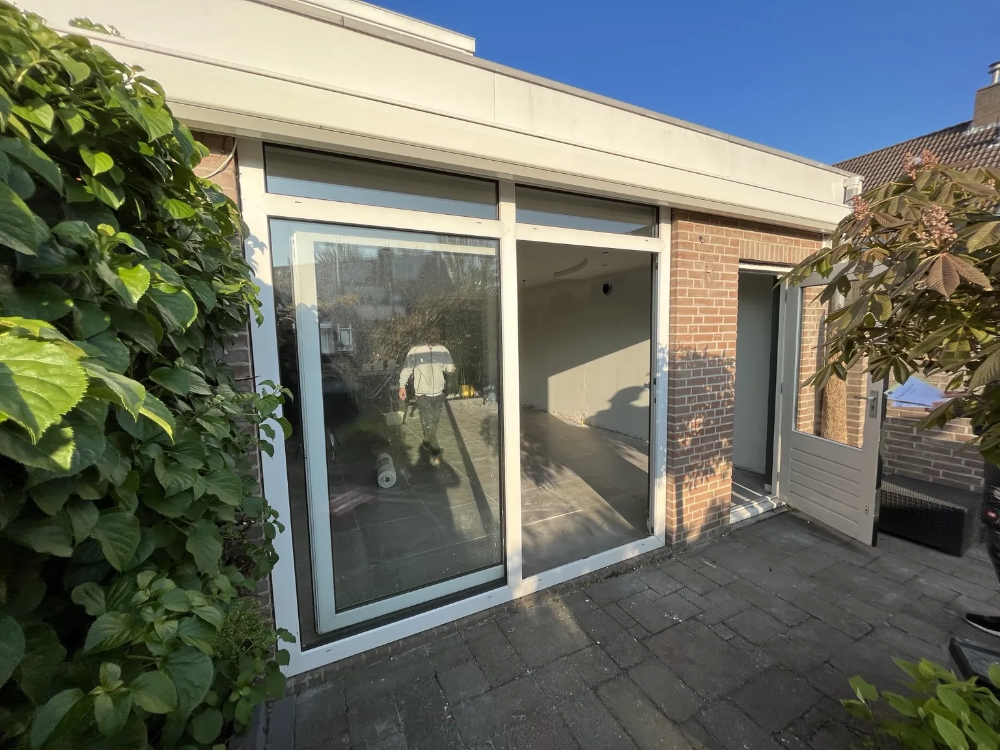

Project — Naaldwijk
Naaldwijk — vergroting woonkamer
Nieuwe schuifdeuren en vernieuwde gevelbekleding zorgen voor meer licht en een moderne uitstraling.


Bij dit project zijn de oude situatie en de nieuwe situatie direct zichtbaar. Door het plaatsen van nieuwe schuifdeuren is de woonkamer opener geworden en komt er veel meer daglicht naar binnen.
Ook de gevelafwerking is vernieuwd, waardoor de woning een strakkere en modernere uitstraling heeft gekregen. Dit project laat goed zien hoe renovatie zowel het comfort als de uitstraling van een woning sterk kan verbeteren.
Offerte aanvragen